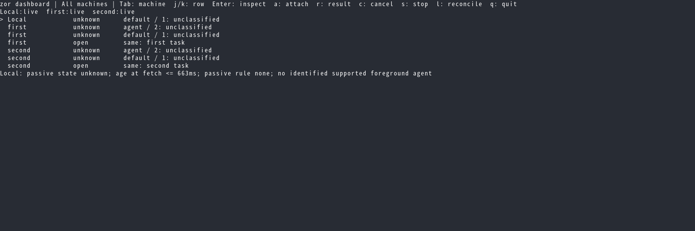
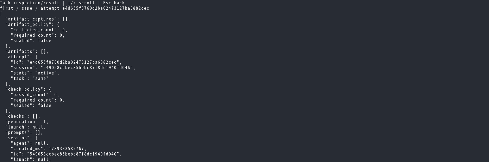
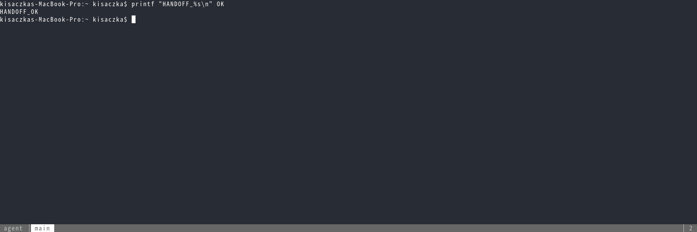
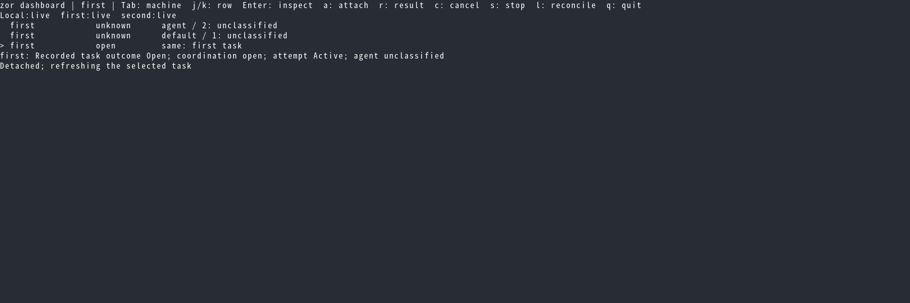
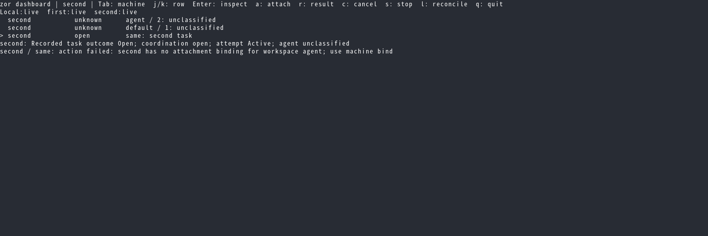
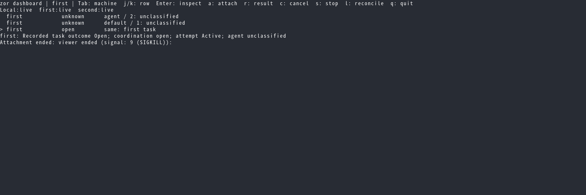
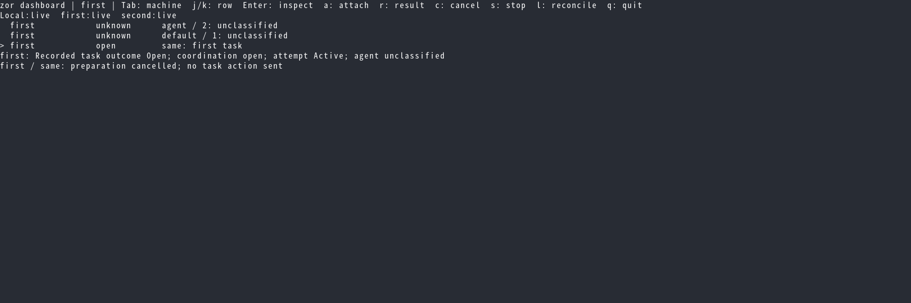

fux Betamax evidence
Captured test checkpoints. Rendering alone is not a visual approval.
terminal-32560-45dApB/0000.png: 01-aggregate
terminal-32561-TtcON6/0000.png: 02-inspection
terminal-32562-kqBTnn/0000.png: 03-viewer
terminal-32563-je8I79/0000.png: 04-return
terminal-32573-uezFQs/0000.png: 05-missing-binding
terminal-32574-4kFhq5/0000.png: 06-viewer-killed
terminal-32575-SzDZqE/0000.png: 07-preparation-cancelled